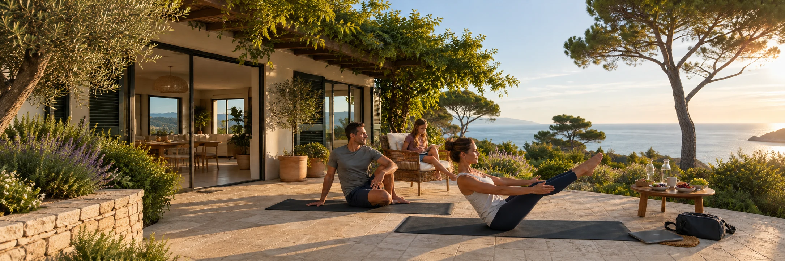

Vida y equilibrio
Familia, Salud y Bienestar
Cuerpo, mente y salud: un espacio para explorar el movimiento, la nutrición, la respiración, la vida familiar y el descanso.
Una mirada de conjunto
Las decisiones se toman mejor con el cuerpo descansado y la mente serena.
El cuerpo
Moverse y comer con criterio sostiene la energía con la que afrontamos cada día.
La mente
Respirar, parar y atender al presente ayuda a decidir con calma y sin urgencias.
El tiempo
Familia, trabajo y descanso: el equilibrio que da sentido a lo que se construye.
Cuerpo, mente y salud
Cinco temas de cuidado cotidiano
Movimiento, nutrición, respiración, vida familiar y descanso. Cada tema reúne los artículos, vídeos y otros contenidos que publican nuestros colaboradores.
Movimiento consciente
Caminar, estirarse y mantener una actividad que acompañe cada etapa de la vida, sin exigencias ni rendimiento.
Explorar el tema Tema 02 · HábitosNutrición equilibrada
Comer con criterio y con calma, lejos de las dietas milagro y de las promesas que no se sostienen.
Explorar el tema Tema 03 · Calma y gestión del estrésRespiración y relajación
La respiración, la calma y la atención al momento presente. Con el ensayo y el vídeo de Isabel Florido Mayor.
Leer y ver los contenidos Tema 04 · ConvivenciaFamilia y trabajo
Tiempo compartido, acuerdos y rutinas que sostienen la convivencia cuando el trabajo ocupa buena parte del día.
Explorar el tema Tema 05 · DescansoDescanso, límites y tiempo propio
Dormir bien, saber parar y poner límites: el espacio que cada persona reserva para sí misma.
Explorar el temaAviso de divulgación general: Los contenidos de este espacio son informativos y educativos. No constituyen consejo médico, diagnóstico clínico ni prescripción sanitaria individualizada.